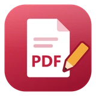
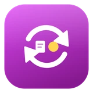
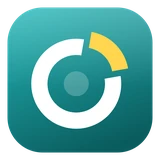
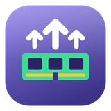

PDFMaster
View, edit, comment on, sign, OCR and convert PDF files. Compare side by side, redact, protect and read aloud.
Download for WindowsFree Windows apps I put together in my spare time for everyday jobs. Each one wraps proven open-source tools, such as FFmpeg, yt-dlp, mpv, PyMuPDF and Pandoc, in a simple interface of my own. No account or admin rights needed.
Last updated

View, edit, comment on, sign, OCR and convert PDF files. Compare side by side, redact, protect and read aloud.
Download for Windows
Convert images, documents, eBooks, slides, spreadsheets, audio, video and fonts. Compress, split and merge PDFs.
Download for WindowsDownload manager: takes over browser downloads, uses many connections, pauses and resumes, and grabs videos.
Download for WindowsSave videos and audio from YouTube, Instagram, Facebook and LinkedIn: MP4 up to 4K, MP3, playlists and subtitles.
Download for WindowsScreenshots with a mark-up editor, plus screen recording.
Download for WindowsTurn PDF, Word, PowerPoint, Excel and CSV files into Markdown or plain text.
Download for WindowsFast video player for every format and codec, with subtitles, audio tracks, speed control and resume.
Download for WindowsScientific graphs and data analysis: workbooks, CSV and Excel import, column formulas, and PNG, SVG or PDF export.
Download for Windows
Find what fills your disk, clear junk and duplicates, and uninstall apps cleanly with their leftovers, several at once.
Download for Windows
Free up memory in one click, close background apps, and put unused browser tabs to sleep.
Download for WindowsLock folders and files with real AES-256 encryption and hide them. Drag and drop, one password, and everything locks again when you close it.
Download for WindowsSave your browser tabs with their groups, close the ones you don't need to free memory, and open any of them again in one click.
Download for WindowsWindows only. Windows SmartScreen may warn about a new app: choose More info, then Run anyway. Older versions and checksums are on GitHub.